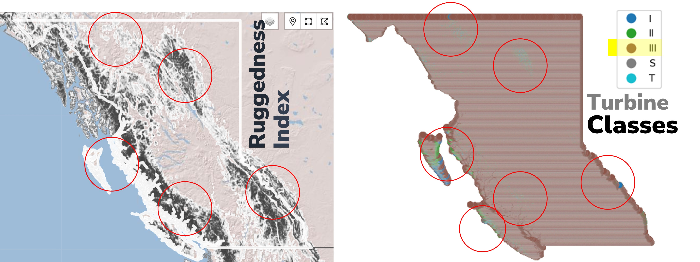

Best Practices and Guidelines#
Selecting Wind Turbines#
IEC Class Selection#
As recommended in The Global Atlas for Siting Parameters (GASP) project: Extreme wind,turbulence, and turbine classes, the parameter values applied at hub height 100m for different IEC classes are listed below. Suitability for a wind turbine depends on crucial factors like mean wind speed, turbulence, extreme wind speed, and air density in high winds. It is important to select the site-specific appropriate turbine class.
Wind Turbine Class |
I |
II |
III |
|---|---|---|---|
Vave (m/s) |
10.0 |
8.5 |
7.5 |
Vref (m/s) |
50.0 |
42.5 |
37.5 |
Vref,T (m/s) |
57.0 |
57.0 |
57.0 |
A+ ref |
0.18 |
||
A Iref |
0.16 |
||
B Iref |
0.14 |
||
C Iref |
0.12 |
Table source: Table 1 from The Global Atlas for Siting Parameters (GASP) project: Extreme wind, turbulence, and turbine classes
Note: Vave is the annual average wind speed; Vref is the reference wind speed average over 10 min; Vref,T is the reference wind speed average over 10 min applicable for areas subject to tropical cyclones. A+ designates the category for remarkably high turbulence characteristics; A for higher turbulence characteristics; B for medium turbulence characteristics; C for lower turbulence characteristics and Iref is a reference value of the turbulence intensity.
IEC Class Layer Mapping to Select Turbine Technologies for Wind Energy Estimation#
Layer Name |
Wind Turbine Class Parameters |
|---|---|
IEC Class - Fatigue Loads |
Mean wind speed (Class I, II, III, S); |
IEC Class - Fatigue Loads incl. Wake |
Mean wind speed (Class I, II, III, S); |
IEC Class - Extreme Loads |
Extreme wind speed; |
Source: IEC Classes at GWA
This involves prioritizing the highest wind turbine class from the GWA's IEC Class layers prior to converting the wind resource potential to energy yield parameters. GWA includes three different IEC Class layers (under the Wind Energy Layers), mapping IEC wind turbine classes for 100m wind turbine hub height. Any wind turbine, regardless of its class, usually needs validation with the manufacturer specific to the site. GWA provides rasterized data to map wind turbine class recommendations for different load scenarios. For resource estimation studies, it is typically essential to evaluate the highest wind turbine class from the IEC Class layers in the GWA.
Best Practices#
Layer Selection: Choose the most relevant GWA IEC Class layer (Fatigue Loads, Fatigue Loads incl. Wake, or Extreme Loads) based on your scenario/project’s objectives and local wind conditions.
Consider Wake Effects: For wind farm layouts, include wake effects in fatigue load assessments to ensure accurate turbine class selection.
Extreme Events: Factor in extreme wind events and air density when evaluating turbine class for long-term reliability.
From the layer, find the most appropriate IEC Class that represents most of your area of interest.
Documentation: Reference authoritative sources (e.g., GWA, IEC standards) and document all assumptions and data sources used in the selection process.
Example#
For British Columbia (BC), the map on the right displays IEC turbine classes for the IEC Class - Extreme Loads layer. The analysis shows that IEC Class III turbines are most representative for this region under extreme load conditions. Areas marked in red indicates IEC Class II, likely due to significant terrain transitions such as mountainous slopes.

The Ruggedness Index (as shown in in left map), also known as the Terrain Ruggedness Index (TRI), quantitatively measures terrain heterogeneity by assessing elevation changes across the landscape. This index helps explain IEC Class variations in specific areas and supports informed decisions regarding IEC Class selection.
Data Source: Global Wind Atlas (GWA) v3.4